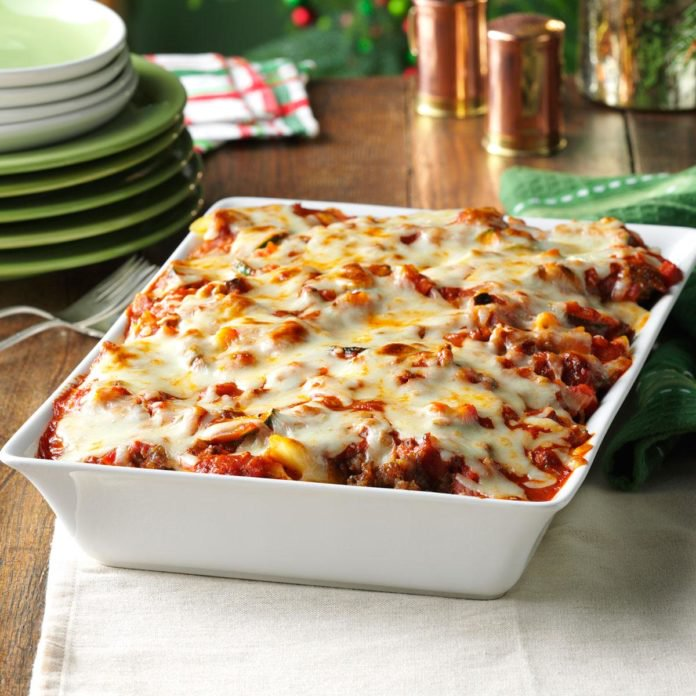

Ingredients
-
1 package (16 ounces) penned pasta
-
1 pound
-
1 tablespoon butter
-
1 tablespoon olive oil
-
1 medium onion, finely chopped
-
1 medium carrot, finely chopped
-
1-1/2 teaspoons dried oregano
-
1 teaspoon salt
-
1/2 teaspoon pepper
-
1 small zucchini, halved lengthwise and sliced
-
1 cup chopped fresh mushrooms
-
6 garlic cloves, minced
-
1 can (15 ounces) tomato sauce
-
1 jar (14 ounces) pasta sauce with meat
-
2 cups shredded part-skim mozzarella cheese
Directions
-
Preheat oven to 350°. Cook pasta according to package directions for AL dent; drain and transfer to greased 13x9-in. baking dish. Meanwhile, in a large skillet, cook sausage over medium heat 6-8 minutes or until no longer pink, breaking into crumbles; drain and remove from pan.
-
In same skillet, heat butter and oil over medium-high heat. Add onion, carrot, oregano, salt and pepper; cook and stir 5 minutes. Add zucchini, mushrooms and garlic; cook and stir 6-8 minutes longer or until vegetables are tender.
-
Stir in tomato sauce, pasta sauce and sausage; pour over pasta. Sprinkle with cheese (dish will be full). Cover casserole with a piece of foil coated with cooking spray. Bake 10 minutes. Uncover; bake 15-20 minutes longer or until golden brown and cheese is melted. Let stand 10 minutes before serving.
